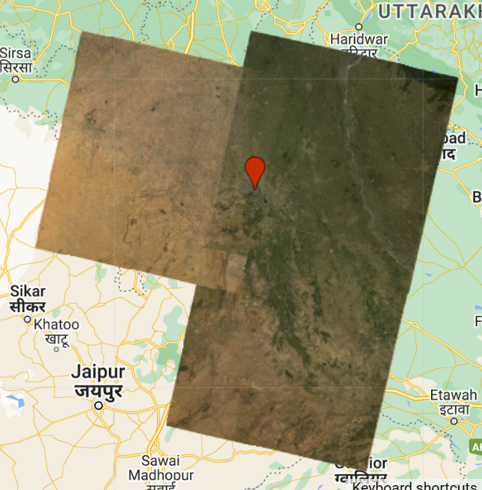

#var glcm = clip.select(['SR_B1', 'SR_B2', 'SR_B3', 'SR_B4', 'SR_B5', 'SR_B6', 'SR_B7'])
# .multiply(1000)
# .toUint16()
# .glcmTexture({size: 1})
# .select('SR_.._contrast|SR_.._diss')
# .addBands(clip);
#// add to the map, but change the range values
#Map.addLayer(glcm, {min:14, max: 650}, 'glcm');5 Week 5 Google Earth Engine I
5.1 Summary
In this week, we focus more on what is Google Earth Engine, and how to use it to solve the real world problems. Meanwhile, we will also summary important points and outputs in this week practical for reviewing.
5.1.1 Google Earth Engine (GEE) introduction
GEE is an online mapping platform which is based on Javascript. With R and QGIS we learnt in CASA0005, and Python we learnt in CASA0013 in the last term, it may be a little easier to understand Javascript after learning and applying them in practice.
GEE has client side and server side, and there are some differences between them that should be noted in practice. For instance, we cannot use loop in the server side, but we can use mapping function in the server side. That is because that the data, including shapefile, table, and other types of data, that we upload will be stored in client, so that server does not know what objects are used for looping.
Scale in GEE refers to pixel resolution, and it might return different values for the scales based on different specific analysis. What we need to pay more attention is that we need to set scale in the script window in GEE, or else the scale will change every time after we adjust the scale in the map window in GEE.
For projection, GEE sets the default projection coordinate system and converts all data to this coordinate system. In practice, there is an option to import the processed data from GEE into software such as QGIS and convert the coordinate system to the one we need.
5.1.2 GEE in action
There are nine types of object classes in GEE, including Image, ImageCollection, Geometry, Feature, FeatureCollection, Reducer, Join, Array, and Chart. Image, imageCollection, Geometry , Feature, and FeatureCollection are consists of the data sets.
Reducer is more like a “groupby” in terms of functionality, which can aggregate data over time, space and other aspects, and calculate the new values of pixels based on summary statistics, linear regression, and other methods. Usually, we can choose to use median when doing reduce image is good enough, especially doing forest & non-forest, water & non-water (giant difference between two categories). Reducing images by neighbourhoods can help us to see the features which may not be clear on the raw images.
In addition, we can do join and spatial join in GEE as well, which is quite similar as R.
Notice:
- Geometries do not have properties, while features have.
- We need to distinguish the small differences between reducing images by regions and reducing images by region.
- When doing multivariate multiple linear regression, which means that we do linear regression with two dependent variables at the same time, but separately, and make sure to have a constant band.
5.1.3 Summary of practical in this week
This week’s practical is mainly used to familiarize with the basic functions of GEE and to combine these with what we have learnt in class about remote sensing image processing in a practical way. Main workflow of practical in this week shows in the following Figure 1. Our main project is to process remote sensing images and get one image in the target study area. In this practical, we set the study area as Dheli, India.

After we create GEE account and open GEE, we added a point of New Delhi based on the coordinates, and also we loaded Landsat images and added them to map. Then, we chose to load a shapefile document of New Delhi, load Landsat images intersect with the study area, and apply “applyScaleFactors” created by Matt Hanson to choose the better image. “applyScaleFactors” function shows in the following code chunk. Therefore, we got three images which have intersections with the study area in true color.
function applyScaleFactors(image) {
var opticalBands = image.select('SR_B.').multiply(0.0000275).add(-0.2);
var thermalBands = image.select('ST_B.*').multiply(0.00341802).add(149.0);
return image.addBands(opticalBands, null, true)
.addBands(thermalBands, null, true);
}Note: The pair of values 0.0000275 & -0.2 is scale factor of surface reflectance with Landsat Level-2 collection 2, and the pair of values 0.00341802 & 149.0 are the scale factors of surface temperature (“How Do i Use a Scale Factor with Landsat Level-2 Science Products? | u.s. Geological Survey,” n.d.).

In the next step, we mosaic three images into one image and calculate mean pixel values as the pixel values of overlapped areas.
After clipped the image by study area shapefile and select specific bands, we got one complete satellite image inside the boundary of study area.

In this case, we can measure texture, do PCA and add bands with high variances as a layer to the map.
Note:
- Multiply by 1000 is multiplying surface reflectance to compute texture.
- The parameter size in glcmTexture() is set to 1 to set the extent of the neighbourhood to be a 3 by 3 grid.
In real world applications, the results of this step can be used to perform some analysis of New Delhi in GEE or to export this layer for analysis in the softwares, for example to calculate NDVI.
5.1.4 Questions
No question so far.
5.2 Application
GEE is a cloud-based storage platform for geospatial analysis built on Google’s powerful cloud computing capabilities, which allows users to use this platform to support many studies and analyses, such as in forest degradation and geological hazards(Gorelick et al. 2017).
Zhang et al. (2021) implemented monitoring of PV plants in the Ningxia Autonomous Region through GEE-based random forest mapping of PV plants. They chose to conduct their analysis on GEE, an online platform, because of its ability and efficiency to directly extract free and open source remote sensing imagery data like Landsat 8 and run large volumes of data without data storage issues (Zhang et al. 2021). However, I think that the authors have used GEE for random forests to make clever use of the advantages of the platform. Also, as an online map platform, it may be easier to complete group projects that require collaboration, but may not be suitable when the data required is not free and open source or not included in the GEE database.
Qu et al. (2021) explored ways to improve the accuracy of land use and land cover classification using remotely sensed datasets provided by GEE as well as ancillary datasets. They examined the impacts of different feature data on the accuracy of the random forest classification model with the help of six types of feature data obtained from GEE, including spectral features, topographic features, soil features, and other three aspects (Qu et al. 2021). I think this approach can reduce a lot of the time spent on finding feature data sets, and I may consider borrowing this approach to build a high-precision object-oriented classification model for random forests via GEE if a large and diverse set of feature data sets needs to be collected in future research.
With the GEE development aspect, users can also develop simple applications such as comparing air quality on their own (Gaertner, n.d.a). Besides that, “MODIS NDVI Slider” (n.d.) is a very representative GEE-based application developed to compare differences in NDVI between years. The development APIs included in GEE allow for more customization options and these examples highlight the versatility of GEE for data visualization.
In addition to the above applications, which are more oriented towards visualising the results in a different way, there are also interactive applications based on GEE, such as the GEE-based application ‘Population Rings’ developed by (Gaertner, n.d.b), which allows users to click on any location on a map to divide four areas around that point and show the line chart of the population changein each zone between 1975 and 2015.
However, analysis and development based on GEE is limited by the tools provided by this platform and cannot achieve all the needs of the users (Amani et al. 2020).
5.3 Reflection
This week was spent learning about GEE, an online geospatial analysis platform. What I found interesting was that the platform not only allows for some basic vector and raster data processing and analysis, a huge open source database, but also the ability for users to develop simple applications of their own. I think GEE is a platform that can be used in future research when a large amount of open source remote sensing data is needed or when feature datasets are needed for analysis, so that there is no need to download large amounts of data, which affects efficiency, takes up a lot of memory space, and is not convenient for transferring back and forth between team members.
However, if the data used in the study requires remote sensing images with a high degree of accuracy and confidentiality, it may be more appropriate to use software or programming to process them locally. In addition, the programming language used in the GEE code editor is Java, which may not be suitable for users with little or no programming skills, and it may be possible to provide code editors for other programming languages or to design a collection of tools like the toolkit for ArcGIS online. This might allow more users to experience GEE and give advice from different perspectives to help make it better.